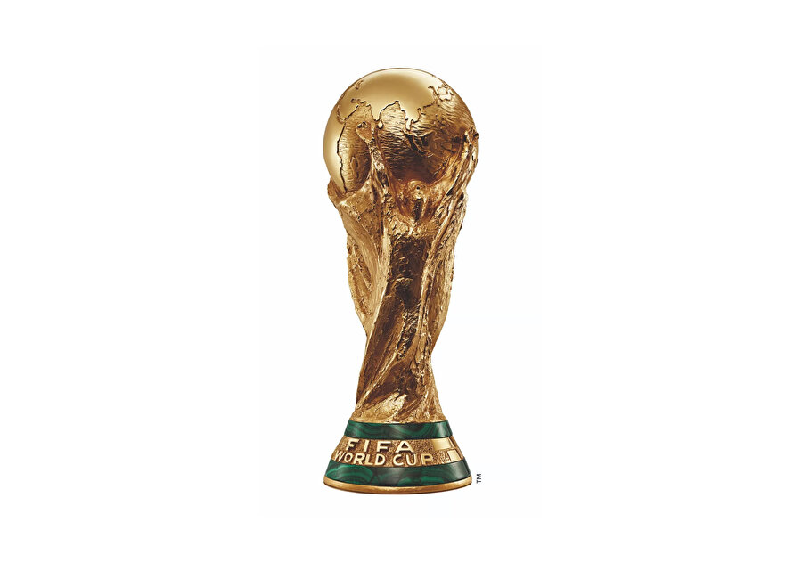

Dünya Kupası Tarihi
Turnuva
FIFA Dünya Kupası, uluslararası alanda futboldan sorumlu en üst düzey yönetim organı olan Uluslararası Futbol Federasyonları Birliği (FIFA) üyesi ülkelerin erkek millî takımlarının katılabildiği uluslararası futbol turnuvası. 1930'daki ilk turnuvadan beri, II. Dünya Savaşı sebebiyle gerçekleştirilemeyen 1942 ve 1946 yılları dışında dört yılda bir düzenlenmektedir.
Eleme Aşaması
Turnuvanın geçerli statüsünde, turnuva öncesindeki üç yıl boyunca süren eleme aşaması vardır. Günümüz itibarıyla FIFA üyesi 211 ülkenin katılabileceği elemeleri geçmeyi başaran takımlar, FIFA Dünya Kupası Finalleri adını taşıyan final aşamasında mücadele eder. Finallerde, o yılın turnuvasına ev sahipliği yapmasından ötürü eleme oynamaksızın direkt olarak katılan ev sahibi ülke veya ülkelerle birlikte toplamda 32 millî takım yer alır. Dörder takımdan oluşan sekiz gruba ayrılan katılımcılar, bu ilk aşamada grubundaki diğer takımlarla birer maç yaptıkları birinci turda yarışır. Grupları ilk iki sırada tamamlayan takımlar, tek maçlı eleme sistemiyle gerçekleştirilen ikinci aşamaya geçer. Final maçını kazanan takım şampiyon olurken üçüncü takımı belirleme amacıyla yarı finalde kaybedenler arasında bir üçüncülük maçı oynanır.
Kazanan Ülkeler
Günümüze kadar düzenlenmiş olan toplam 21 turnuvada 8 farklı takım şampiyonluğa ulaşmıştır. Her turnuvaya katılmış olan tek takım konumundaki Brezilya, kazandığı beş şampiyonluk ile kupanın en başarılı takımıdır. İtalya ve Almanya dörder; Arjantin üç, Fransa ve Uruguay ikişer; İngiltere ve İspanya ise birer şampiyonluk kazanmıştır. Son kazanan, 2022'de Katar'da oynanan turnuvada üçüncü kez şampiyon olan Arjantin'dir.